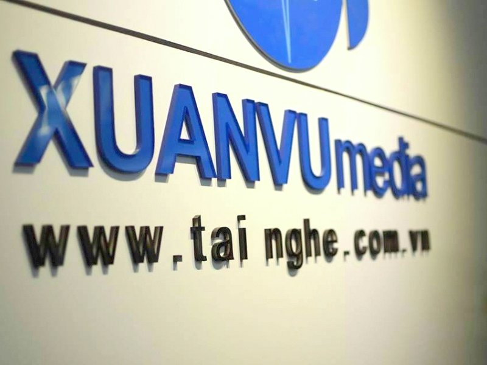

VỀ CHÚNG TÔI

Hình ảnh nhận diện thương hiệu của Xuân Vũ
Xuân Vũ bắt đầu công việc kinh doanh thiết bị âm thanh khi còn là 1 sinh viên năm thứ 2 từ năm 2005 tại địa chỉ số 60, Ngõ 22 Phan đình giót, Thanh Xuân, Hà Nội. Với một số vốn ít ỏi trong tay, chủ yếu nhờ vay mượn và tiết kiệm được, ban đầu anh chỉ mở bán tai nghe tại nhà. Thế rồi, tình yêu và sự đam mê âm thanh trong anh cứ lớn dần, cùng với sự chăm chỉ nhiệt huyết với công việc, khách hàng đã dần biết đến thương hiệu tai nghe Xuân Vũ và tìm đến nhà anh mua hàng ngày càng nhiều.
Năm 2008, Xuân Vũ bắt đầu lập ra website bán hàng của riêng mình với tên miền: tainghe.com.vn
Năm 2010, Sau một thời gian bán hàng khá thành công cũng như sở hữu một lượng khách ổn định, Xuân Vũ đã quyết định mở cửa hàng đầu tiên tại địa chỉ 67 Phố Vọng, Hai Bà Trưng, Hà Nội
Ngày 25 tháng 04 năm 2011 Xuân Vũ bắt đầu thành lập công ty TNHH truyền Thông Xuân Vũ cùng với thương hiệu Xuân Vũ Audio
Từ năm 2012, Xuân Vũ Audio mở cửa hàng thứ 2 tại 165 Láng Hạ, Đống Đa, Hà Nội.
Năm 2014 Xuân Vũ Audio mở thêm cửa hàng thứ 3 tại Cao ốc Mỹ Vinh 250 Nguyễn Thị Minh Khai, P6, Q3, Hồ Chí Minh.
Năm 2015 nhận được sự ủng hộ nhiệt tình của các bạn đam mê âm thanh, Xuân Vũ Audio đã chuyển cửa hàng từ cao ốc Mỹ Vinh về địa chỉ trung tâm hơn là 98 Cao Thắng, P4, Q3, Hồ Chí Minh.
Hiện tại, hệ thống cửa hàng tai nghe Xuân Vũ Audio đang bán và phân phối rất nhiều hãng tai nghe và máy nghe nhạc nổi tiếng trên thế giới như Sennheiser, Sony, Koss, AKG, Shure, Denon, Marshall, Yuin, SoundMAGIC, Aune, Audio Technica, Shanling, Xduoo, Oriolus, Oriveti...
Với tiêu chí giúp khách hàng được thỏa sức trải nghiệm các thiết bị âm thanh và chọn ra được cho mình một chiếc tai nghe, máy nghe nhạc phù hợp với sở thích âm nhạc và túi tiền của mình, Xuân Vũ Audio đã thiết kế cửa hàng một cách thân thiện và gần gũi nhất. Tất cả các sản phẩm tai nghe, máy nghe nhạc đều có sẵn hàng dùng thử và khách hàng có thể ngồi hàng giờ liền để trải nghiệm và đắm chìm trong những âm thanh trong trẻo và hay nhất, được mang lại bởi những chiếc tai nghe và máy nghe nhạc chất lượng cao.
Với kinh nghiệm gần 10 năm trong lĩnh vực âm thanh, Xuân Vũ Audio là một trong những cửa hàng đầu tiên song song triển khai dịch vụ sửa chữa tai nghe. Đây tuy là một dịch vụ khá mới nhưng đã nhận được những phản hồi tích cực của khách hàng. Niềm vui của khách hàng khi nhận lấy chiếc tai nghe yêu quý của họ đã được sửa chữa là động lực giúp chúng tôi ngày càng cố gắng phát triển và hoàn thiện dịch vụ của mình.
Hiện nay, thương hiệu Xuân Vũ Audio và tên miền tainghe.com.vn đã dần dần có được chỗ đứng nhất định, vững trãi và tin tưởng trong lòng khách hàng tại khắp các tỉnh thành cả nước. Số lượng người like fanpage Xuân Vũ Audio cũng tăng liên tục mỗi ngày, hiện đã cán mốc hơn 45k lượt like, cũng góp phần cho thấy sự thành công của thương hiệu tai nghe Xuân Vũ Audio và sự tin cậy của khách hàng.
Tất cả những niềm vui, sự hài lòng và ủng hộ của khách hàng chính là động lực thúc đẩy Xuân Vũ và đội ngũ nhân viên trẻ trung, nhiệt huyết tiếp tục cố gắng hết mình để đem lại những dịch vụ tư vấn và chăm sóc khách hàng ngày càng tốt hơn nữa.